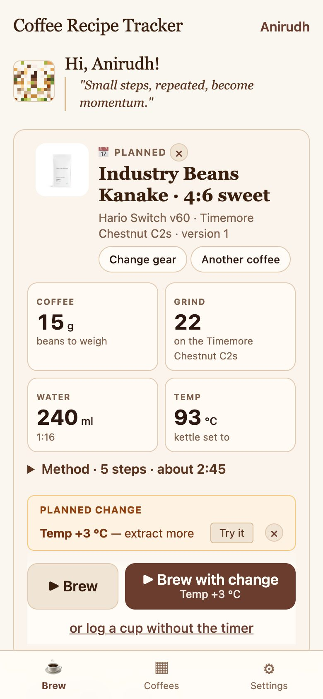

The Brew page knows what's next
Open the app and your next coffee is ready, with its recipe in big numbers.
- It shows the coffee you planned ("📅 Planned"). If you haven't planned one, it shows the coffee you brewed last.
- Tap Another coffee to switch: pick the coffee, then one of its recipes.
- Tap Change gear to use a different brewer or grinder.
- Tap ▶ Brew to start. If there's a change waiting to try, Brew with change tries it for this cup only.
Plan tomorrow's coffee: tap 📅 next to any recipe and it becomes "Up next".
